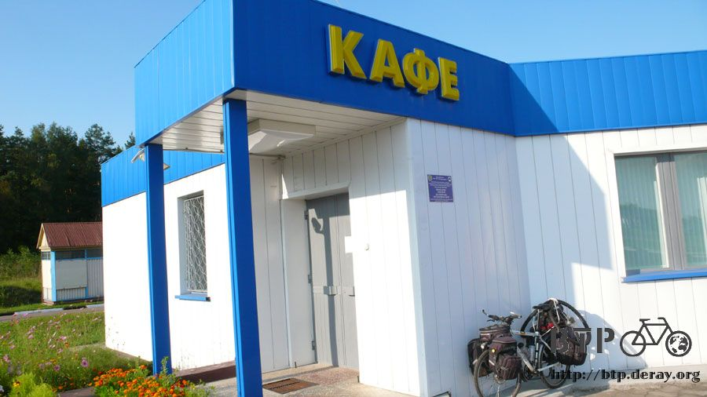

說聲『嗨～！』就過來了
露營的時候，覺得要收拾睡袋很麻煩，所以都懶得打開，代價就是夜裡冷得像冷凍櫃裡的冰棒一樣，一邊發抖一邊睡覺。
這樣的溫度居然我也能睡得著，早上爬出睡袋的時候全身都是雞皮疙瘩，將冷冰冰的衣服一件件的穿回身上。
太陽剛冒出地平線，就已經在路上騎車了。
早上霧色迷濛，騎車很夢幻，可惜太陽出來之後霧氣幾乎是一瞬間就消散於無形，氣溫也爬升得很快。
本來以為夜裡冷一點無所謂，別被冷死就好，太陽出來之後沒多久又要開始喊熱了。
但除了我自己睡得冷吱吱之外，居然連電器用品也因為低溫而耗盡電力。
昨天在餐廳吃飯時才充飽電的iPod，今天只聽了半首歌就沒電自動關機，心裡想說不會吧，真的有這麼冷？
半小時後，連本來可以連續使用十小時以上的GPS記錄器，都閃著電力不足的警示燈，荒郊野外的教我去哪邊找插頭？
不知道距離下一間餐廳有多遠，先吃點東西墊肚子才有體力騎車，為了節省空間，食物類都是能塞就盡量塞，蛋糕每一條都會壓得扁扁的。
昨天睡覺的公車站距離邊界只剩下短短的十八公里，這個數字是今天騎車看到告示牌才知道。
在穿越國境之前總算出現了商店，買了一瓶兩公升的檸檬水補充水分，吃完蛋糕口渴得要命，喝不完的就放在小叮噹的口袋裡面帶著走。
大卡車在排隊的前方就是俄羅斯跟白俄羅斯的國境，小小一個看起來跟一般的檢查站沒兩樣。
小轎車通行完全不需要停車，咻～的就開過去，大卡車就必須停下來檢查，所以隊伍排得很長。
往小轎車通行的那個車道騎過去，越接近國境速度就放得越慢，老天保佑我也可以順利的通關，走白俄羅斯是超級捷徑呀。
抵達國境的時候，穿著銀螢光綠色的警察轉頭盯著我看，我就微笑點頭，舉起右手揮手，大聲的說了一聲『嗨～！』。
警察愣了一下，也跟我揮揮手，問我要去哪邊？
有點害羞的說出自己要騎到巴黎去，看著警察們的大拇指手勢，就這麼輕易的通關了，連車都沒停下來，進入白俄羅斯就這麼簡單。
呼～心中的大石頭放下來了，既然可以入境，那就沒道理不讓我出境，接下來只要在簽證到期之前騎到波蘭邊界就萬事OK。
穿越國境之後看見兌幣處，牆上掛著匯率表，怎麼看都是盧布和美金的匯率，盧布在白俄羅斯也能通行的樣子。
雖然說是兩個國家，但是兩國人民可以隨意通行，連貨幣都是通用的，關係好得不得了。
如果我是俄羅斯總理的話，我就會切割一塊像白俄羅斯這樣大小的土地讓它獨立，然後等著讓它加入歐盟，這樣就能摸清楚歐盟到底在玩什麼花樣。
目前騎著這一條路是M1又稱為E30，一路沿著騎都不要亂跑的話就可以到波蘭。
進入白俄羅斯之後，這條路開始增加一些介紹，但是看得我霧煞煞，一堆加法跟減法，到底在寫什麼鬼呀@@"
上面那個告示牌看不懂也沒關係，下面這個距離指示牌連猴子也能理解。
距離白俄羅斯跟波蘭邊界，布里斯特，距離是六百公里，這時候又要開始扳手指頭研究這段路分幾天騎比較適合？
很久沒看到的收費站又出現了，中國沿路都是這樣的收費站，還會掛上『貸款修路』標語，感覺很窮所以不得不收費。

進入哈薩克之後就沒看過收費站，這樣難怪，依哈薩克的道路水準，如果要收費的話，那真是搶人。
俄羅斯的路況蠻不錯的，但也沒看過收費站，大概不缺這些錢吧，無論如何，騎自行車通過都是不用繳錢的，繞旁邊走就好，小心別被柵欄敲到頭。
過了這個收費站沒多遠就發現一間很棒的加油站，電力告急的GPS和iPod趕快拿去充電，沒有音樂陪伴，騎車很苦悶。
趁這個時候就點一份早午餐吃，然後去廁所好好的擦個澡，身上的衣服和褲子都已經穿了三天沒洗，簡單的在洗手台過個水。
這次比較猛一點，以往都只洗上衣，今天連長褲都一併拿去洗。
找不到晾衣服的地方，只好請小多充當衣架了，外頭艷陽高照，在離開餐廳之前，比較難乾的長褲也能乾得差不多。
洗完澡跟衣服，營養的早餐也上桌啦，煎了三顆荷包蛋和一根香腸，配上咖啡跟麵包，悠閒的吃，在這裡休息到接近中午才離開。
這個告示牌一口氣標示出了從進入白俄羅斯開始到離開為止，騎在M1路上會經過岔路有哪些，同時標記出了加油站和餐廳的位置。

看起來很熱鬧，好像處處都可以休息，其實沿路都荒涼得很，將近一百公里只有田地是稀鬆平常的事情，人都跑哪去啦？
下午四點多當我盯著地面騎車，一邊注意路況一邊看會不會撿到錢的時候，沒發現正前面停著一輛自行車。
真開心～又遇到騎車旅行的人，這一位是Inaki、法國人、二十八歲，從法國出發，會經過莫斯科然後往北騎到北歐。
他還有一張名片，上面是他的路線圖，同時附帶一個網址，有興趣的人可以去觀賞Inaki的遊記。
Inaki好像因為要進入俄羅斯而有點緊張，問我那邊的情形怎麼樣？人友善嗎？物價如何？露營地點好找嗎？道路水準？
還有等一下他要通過的國境會不會很刁難？
我說早上經過的時候只打了一聲招呼，說聲嗨～！就過來了，所以應該是沒有任何難度。
從Inaki這邊得知白俄羅斯進入波蘭的國境有點刁，自行車不能直接騎過去，到時候又跟中國進入哈薩克一樣，得搭貴得要命的接駁車才能通行。
觀察一下Inaki的自行車，行李看起來也挺多的，他自己說這些裝備加上單車重四十公斤，小多現在應該胖到六十公斤了。
Inaki試舉了一下小多，搖搖頭說這個重量太瘋狂了，還有那兩個掛在後面的車輪是怎麼回事？
我笑著說是備用的，四輪車騎起來比較快。
前面的包包可以放兩瓶大的水，非常的實用，看得我有點口渴，可是裡面也已經空了，騎車的時候只要帶得動，水永遠不嫌多呀。
後面則有一個相當有趣的裝備，這一塊是太陽能板，面積不大很好攜帶，大太陽下充電的效率也很高。
轉換的電力就充到這個電池盒裡，主要是讓相機使用，當然也可以拿來充手機或是其它的設備。
想起出發之前，RST的Dino說有一個朋友是做太陽能板的，問我要不要帶一塊出來可以邊騎車邊充電？
那時候我覺得一定很大一塊，帶著騎車多不方便，等看到Inaki的才發現其實不怎麼大塊，放在後座根本就可以忽略它的存在。
握個手祝福對方好運，人生旅途中短暫的相逢，回想之前遇到的人...
算算天數，夏代應該回到沖繩了，Fleck＆Jacquin也應該順利抵達西藏，彼德洛夫肯定比我早抵達莫斯科，還在路上的我也得加把勁。
這沿路都是田野，進入白俄羅斯之後地形趨於平緩，再怎麼遼闊的景色看久也是會膩的。
村鎮的數量實在太太太～稀少了，而且就算有村鎮也不見得會有商店，有可能只是單純的住宅區或農莊。
每次遇到有賣東西的地方要是不補給的話，繼續往下騎就會有斷糧的危機。
買東西的時候，我盯著計算機看，問店員這些東西多少錢？店員則問我要用什麼貨幣結帳？
白俄羅斯同時通行四種貨幣，俄羅斯盧布、美金、歐元和白俄羅斯自己發行的貨幣。
用盧布結帳的時候都是依照當地貨幣的訂價算出總和，然後乘上匯率，零頭無條件進位，十元以下的沒辦法找零，得自備零錢。
路邊施工的情形太普遍了，一整天都騎在封閉一半的路上，車道縮減騎車就相對危險，觀察路旁施工的工人是很有趣的事情。
辛苦工作之虞有些會掛著釣竿釣魚，有些則劈起柴火用鐵桶不知道在煮什麼東西？

終於施工的路段通過了，這幾天騎車都很有效率，一天一百五十公里算是基本數字，這樣算起來大概再五天就能到波蘭。
太陽雖然很大，但是不敢公然的抱怨讓老天爺聽到，晴天總比雨天好，真的熱到快要虛脫的時候就躲到公車站休息一下。
這裡的公車站都要從大馬路轉下小路才會看到，蓋得很不錯，水泥跟鐵皮屋都有，接下來睡在公車站的機會肯定少不了。
小麥梗堆起來的圓柱已經看過很多，一開始都很興奮的拍照，現在已經麻痺到視而不見，這次一口氣出現這麼多，停下忙碌的踏板欣賞景色。
標示說這邊有水龍頭，每次我都想在這裡沖個澡，可以的話連小多也洗一下，但等騎到水龍頭的指示處，都已經變成休息區。
裡面也是有水龍頭啦，可是跟我想像的那種就不一樣，如果是餐廳的話，指示牌就畫餐廳就好啦，幹嘛要畫水龍頭？
下午七點，肚子餓到不行，想吃蛋糕充飢，又想再撐一下找餐廳吃熱食，空著肚子騎車軟弱無力，雙腳好像麵條一樣軟趴趴，沒辦法使勁的踩踏板。
終於給我看到餐廳的牌子，很開心的停下車，然後就看到上鎖的大門，居然沒有營業！？

餐廳沒開但是商店還有人，裡面的東西標價都超貴的，一口氣買了兩盒果汁，七個牛奶冰淇淋，計算機顯示是將近兩萬塊。
等我拿出盧布的時候，店員說『啊？你要用盧布付帳呀？』然後乘上匯率，馬上從將近兩萬塊變成一百四十四盧布。
白俄羅斯的物價跟俄羅斯差不多可以畫上等號，但因為通行的貨幣有點多，所以價錢很難掌握。
這七個冰淇淋就是晚餐了，每吃一個就消除一點疲備和酷暑，果汁喝光一盒，剩下一盒外帶，吃飽之後就可以準備找過夜處。
眼前出現很大一片的小麥田，已經收割過了，田裡只剩下二十公分高左右的小麥梗，小麥堆也不知道載去哪邊。
看準了今天絕對不會下雨，晚上就睡在廣大的小麥田正中央，前後左右都是麥田。
人煙罕至的地方，傳來好像是有人走路過來踩到樹枝所發出的斷裂聲音。
難道是農田的主人來巡田嗎？抬頭張望了一下，原來是一隻超大的貓頭鷹，停在樹梢上壓垮了樹枝，換了位置盯著我睡覺。
晚上就交給你站崗了，小麥田如果出現外星人要來塗鴉的話記得叫醒我。
繼續閱讀：8.17 不相上下
俄羅斯-盧布－ 1：1.3 台幣
8.16 |
總計：346元 |
商店兩公升水25元、早午餐煎蛋、火腿、麵包、咖啡67元、商店水、蛋糕、巧克力、餅乾110元、加油站果汁兩盒、冰淇淋七個144元 |
|